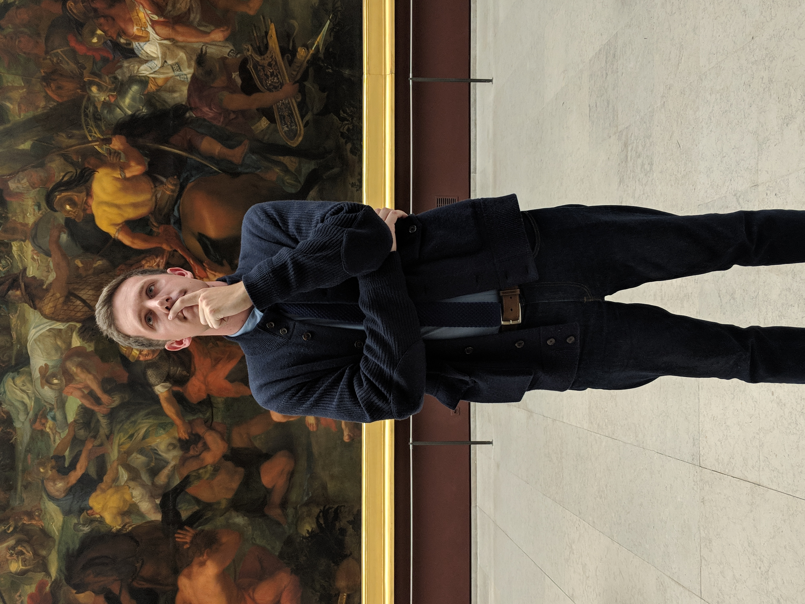

An Insider's Guide to Pat Kinzler

Born on September 20, 1991, Patrick immediately began raising hell in Northern New Jersey. The oldest of 7 children, he knew he had to set the bar high.
In 2010 he graduated from Rutherford High School, which is widely considered to be the high-water mark for the institution.
Following high school, Patrick attended Seton Hall University, where he decided to be a total badass and study accounting. He was the proverbial "big-man" on campus.
When it came time to join the workforce, Patrick took a job at KPMG in New York City as an auditor. He was renowned on Wall Street for keeping the financial markets clean and efficient.
Now at Kellogg, he enjoys golfing and watching The Batchelor in his free time, continuing that no rules, renegade lifestyle he has led for so long.
Click here to learn more about his legendary career.